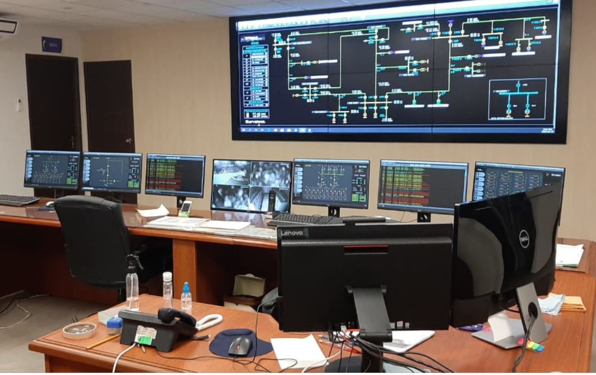

Power Grid Solution
About Us

SCADA Automation for Industrial Automation
There is a topic in Power SCADA which is called “dynamic coloring” and I have to implement it in the Ignition.
This feature is used to show operators the state of energizing and de-energize of each elements
and line in SLD (Single Line diagram) base on the state of CBs and power sources like a power plant or substation in the whole circuit by changing the color.
As the SLD getting larger and larger (for example for a small city) using the traditional binding method on tags or using expression binding with a lot of if statement is pointless and really time-consuming,
so I wonder how to make lines and elements color dynamics.
Services
Grid SCADA
SCADA and smart energy grid control automation
The advent and development of the smart grid concept to operate the electric power grids and microgrids have introduced a number of opportunities for improving efficiencies and overall performance.
A supervisory control and data acquisition (SCADA) system provides an appealing scheme for remote control and observation of renewable energy sources (RES).
SCADA systems have been used widely in various industrial applications, and have helped improve the efficiency of such systems.
SCADA systems, however, still face some challenges in the effort to ensure reliability, safety, and security for power generation, transmission, and distribution.
Energy Saver
Energy Efficient Products for Consumers
Find all the information you need to choose ENERGY STAR certified products, including rebates, and retailers near you.
Products that earn the ENERGY STAR label meet strict energy-efficiency specifications set by the U.S.
EPA helping you save energy and money while protecting our climate.
Transformer Monitoring
GSM-based distribution transformer monitoring system
This paper presents design and implementation of a mobile embedded system to monitor and record key operation indicators of a distribution transformer like load currents, transformer oil and ambient temperatures.
The proposed on-line monitoring system integrates a global service mobile (GSM) Modem, with stand alone single chip microcontroller and sensor packages.
It is installed at the distribution transformer site and the above mentioned parameters are recorded using the built-in S-channel analog to digital converter (ADC) of the embedded system.
Contact Us:
- Yantra Automation Pvt. Ltd - Thane
1, Ishan Arcade, 2nd floor, Gokhale Rd, opposite Gaondevi Mandir,
above Canara Bank, Thane West, Maharashtra 400602